余颖
对话，词典上的解释是“指两人或多人间的谈话”。小学数学课堂中的对话，是指师生为了实现数学课程目标，通过教师与学生、学生与学生的相互启发与讨论，促进理解、催生创造的过程。积极有效的对话不仅可以增进师生间的理解与认同，促成有意义的学习，同时对融洽课堂氛围、提高教学效率、促进学生社会化等也具有举足轻重的作用。
巴西著名教育家保罗·弗莱雷认为，教育具有对话性。从本质上说，教学应该是一种对话活动。然而，不能将课堂中的“讲话”、“谈话”、“讨论”简单地等同于“对话”。对话具有精神性，是一种双主体活动，建立在对话基础上的是宽松的氛围，平等的人际关系和彼此间的信任、理解与尊重，是“从一个开放的心灵到另一个开放的心灵之话语”（马丁·布伯语）。对话还具有意义生成性，理解是对话的前提，对话以理解为基础，并通过理解达到视界的融合；理解也是对话的归宿，对话的目的就是在相互理解的基础上克服视阈局限，扩大视界，促进双方共同完善和提高。真正的对话，总是伴随着创造的火花与睿智的思想的。
那么，在小学数学课堂中，如何才能实现真正有效的对话呢？
小学数学课堂中的对话总是以问题为引导，围绕着师生双方共同感兴趣的话题展开的。合宜的问题，不仅有利于对话的展开，而且有利于将话题的探讨进一步引向深入。这就对数学课堂中的问题提出了要求。
一般来说，能够引发对话的问题应该是真实的、开放的、含有适度挑战性的。真实的问题让儿童感受到数学的可信、可用、可亲，它是引发思考的前提、产生对话的基础。开放的问题会为对话注入活力，形成多向的思维通道，让不同的人从不同的角度对问题加以审视和辨析。难度适宜、富有挑战性的话题可以为学生的数学思维提供广阔的空间，引领学生进入数学对话的佳境。
例如，在复习“多边形的面积计算”时，笔者设计了以下几组问题展开教学。
第一组问题：
问题1：回想一下，我们学习了哪些平面图形的面积计算？联系各图形面积公式的推导过程，用你认为合适的方式整理出来。
问题2：我们在小组里互相说一说，都整理了些什么，是怎么整理的。也听一听在同学的想法中，有没有你没想到的。
在小组交流的基础上，再进行集体交流。突出以下几个关键点：①各多边形面积计算的公式；②各多边形面积公式的推导过程；③学生自主整理中出现的不同的整理方式（表格、网格图等）；④集体归结到用网格图的形式简明地表达各图形面积计算推导中的联系；⑤评价聚焦于学生自主整理的内容，聚焦于自主复习的内容和方法。
第二组问题：
（出示四个图形）
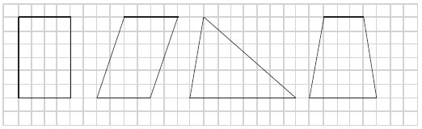
问题1：观察这四个图形，你有什么想法？
学生自由阐述后，计算四个图形的面积。
问题2：它们怎么会面积相等呢？三角形、梯形的面积不都是要除以2的吗？
问题3：如果要画一个三角形，它的面积是平行四边形的一半，你能行吗？用最快的速度在方格纸上画出一个这样的三角形。
问题4：在你画的这个三角形上，再画一个和它同底等高但形状不同的三角形，行吗？
问题5：（展示学生画的图，并用不同角度的阴影描画、观察）这两个三角形的形状不同，但面积相等。再仔细看看这里的三角形，是不是又能发现什么？
得出：下图A、B这样的“蝴蝶翅膀”面积相等。
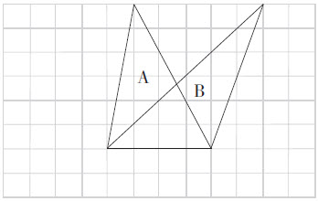
追问：这个，你原先想到了吗？
问题6：（出示下图）要求图中阴影部分的面积，你希望老师提供给你哪些数据？
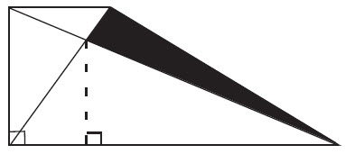
问题7：提供这两个数据，能解决问题吗？
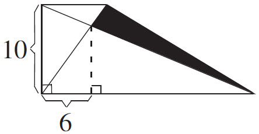
第三组问题：
回顾前面的作图要求：画出一个面积是平行四边形面积一半的三角形。
问题1：面积是平行四边形的一半，只能是这些底4厘米、高6厘米的三角形吗？
问题2：多想一想，就出现了这么多的情况。这既不等底又不等高的三角形，面积怎么就相等了呢？
第四组问题：
问题1：回到刚才观察的四个图形，我们已经计算验证过，它们的面积都相等。仔细观察，这个三角形和梯形，它们面积相等吗？为什么？
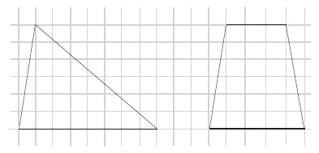
动画演示：梯形上底缩短一格，同时下底延长一格。
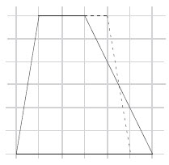
问题2：仔细观察，现在的这个梯形和原来的梯形相比，有什么联系？
动画演示：继续变化梯形，上底再缩短一格，同时下底再延长一格。
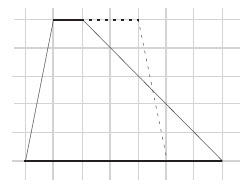
问题3：想象一下，这样继续下去会怎样？
根据学生的回答，动画演示：梯形上底缩为一点，下底延长，成为一个三角形。
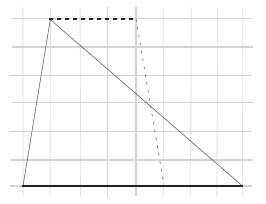
问题4：你怎么知道这个三角形和原来的梯形面积相等呢？
问题5：这样看来，梯形面积的计算，并不见得一定要转化成平行四边形来推导。它也可以转化成三角形，根据三角形的面积计算方法来推导。这提示我们，是不是还有其他推导方法？
择机介绍刘徽并动画演示《九章算术注》中的推导过程。（最终成图如下）
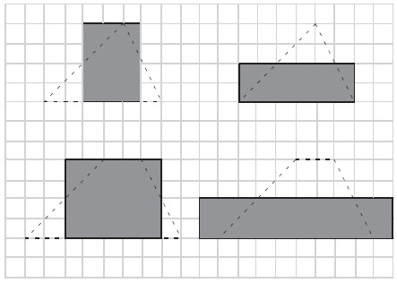
问题6：用这样的方法，又可以把三角形和梯形转化成什么图形？
问题7：看出来没有，不论是刚才的梯形转化成三角形，还是三角形、梯形转化成长方形，它们之间有什么相同之处？
小结：这种割一块、补一块的方法，也就是我国魏晋时期数学家刘徽所说的“以盈补虚”、“出入相补”。（出示）
问题8：那么，大家有没有想过，为什么这些图形可以切切补补拼拼，变成已经知道面积计算方法的图形来推导出它们的面积计算公式呢？
以上四组问题，涵盖了三个维度的指向：第一维度指向理清认识，在基本知识点的梳理中暴露误区，形成正确的认识；第二维度指向求通达融，“内通”认识成框架，“前通”结构找归依，“后通”节点促生长；第三维度指向思考所得，通过难易适度的问题和恰当的方法指导，让学生不断获得思考成功的体验。
尽管我们口中都讲着“以学生为主体”，却又分别在用不同的行为诠释着对这句话的不同理解。没有互动的课堂在现实中屡见不鲜，这主要表现为学生主体性在课堂中的丧失。
课堂上的互动，主要包括师生互动和生生互动两个方面。和小学生对话，教师应当“蹲下身来”，并保持开放、平等的心态。数学课上的对话，应当努力建立在“愤”、“悱”状态下，是兼具“和”、“易”、“思”，其乐融融的教育场景。
生生间的互动需要教师认真研究符合小学生对话特点的、符合数学学科特点的、符合课堂这一特定情境的对话特征，着力解决小学数学课堂中言不由衷、词不达意、有口无心等表达缺陷，着力营造安全的对话氛围，着力建立有序的对话机制，提高对话的品位和质量，使课堂成为师生生命活力焕发的摇篮。
有效的多向互动，需要教育教学的智慧，也需要教师掌握一定的教学技艺和操作程序。一般来说，在良好的问题为开端、独立思考为前提的基础上，教师需要思考生生互动中的一些指导策略。例如在组内交流时，对中心发言式、指定发言式、唧唧喳喳式、两两配对式、切块拼接式、接力循环式等不同讨论方式的采用。再如在组际交流中，阐述、倾听、理解观点时的组织和引导，以及其后的肯定、补充、质疑、批驳等交流方式的良性建立。又如在集体认同阶段，对组际交流内容进行回顾、整理和反思时的操作策略。当然，教师也需要思考与学生互动的对话方式，如开门见山式、故作糊涂式、启发引导式、顺势牵引式等方式适时适度的使用。
例如在教学倒数时，我首先问学生：“知道什么是倒数吗？”学生果然“知道”——倒数，就是倒过来的数，不仅知道，还能举分数的例子说明。这时的学生是“自以为知”的。于是，我又抛出两个问题：“0.8、0.18这样的小数有倒数吗？”“8、18这样的整数有倒数吗？”一石激起千层浪，学生迅速展开了激烈讨论。在师生、生生对话的过程中，学生开始意识到原先认识的不准确、不全面，由“知”转向“不知”。据此，教师进一步引导学生观察讨论过的几组倒数，寻找其共同之处，为学生正确概括“倒数”的定义提供有效的帮助，使得学生由“假知”迈向“真知”。这样的对话策略因经历了起、承、转、合的过程，对培养学生的数学情感以及促进学生的反思无疑都会起到重要作用。
课堂对话是完成教学方法和信息反馈的桥梁。通过课堂对话，可以激发学生的学习兴趣，促进思维和发展智力；通过课堂对话，教师可以迅速捕捉到学生的认知能力、教学目标的辐射程度、学生对知识的承受能力以及教学所产生的效应，进而及时改进教学方法。所以，有效的互动与对话，不仅具有交流功能和理解功能，同时兼有反馈功能、调节功能和促进功能。
有效的课堂对话，其实蕴涵着某些共通的因素。例如，在情感上，是人文的，是积极向上的，对学生充满了鼓励和期待；在信息的传递上，是准确的、快捷的，富含启示功能和引导功能；在氛围的布设上，总是将疑惑、愤悱、矛盾、激励等情境放在优先考虑的地位。这就很好地说明了数学课堂中的有效对话，并不是“随意的说话”，更不应等同于生活中的“聊天”。有效的课堂对话，是师生间围绕数学教学内容而展开的充满睿智的交流、提示、启发与沟通，洋溢着相互间的尊重与信任，充盈着师生间的期待与情感，是师生生命历程不可或缺的一部分，是教师教学智慧的结晶。
在对话的场域里，还应该保持开放的心态，愿意听取来自各方面的不同声音，包括反面意见；愿意变换视角，从他人的角度看待问题，即便别人的意见与自己的想法相左，也应该保持“我不同意你的看法，但我坚决捍卫你讲话的权利”的心态，尊重差异，尊重多样。
在教学“如何测量土豆、小石块等不规则物体的体积”这一内容时，我先布置学生回家思考，寻找合适的方法。等到课上问及此题时，有学生说：“把土豆、石块放到水里。测量溢出的水的体积就可以了。”等这位学生说完，还举手的同学便寥寥无几了。
这一方法当然是正确的，但是我觉得这不应是学生全部的答案，于是试图用对话来引发学生对这一问题的不同思考。
师：测量溢出的水，那放土豆前水杯里是什么情况？
生：满的。
生：（边举手边迫不及待）不一定要满杯。
（我用鼓励的眼神看着他）
生：只要看水面上升了多少，就能算出来了。
生：如果是海绵，用水测量就不合适。
生：所有不能沉下去的物体都不能采用这一方法。
生：那不一定，用一根细针将物体按下去就行了，细针的体积可以忽略不计。
（大部分学生都点头赞同）
生：可我们现在讨论的是土豆啊。
生：我还有办法，把土豆切出一块1立方厘米的小正方体，放在天平上测出重量，再称出土豆的重量，看是1立方厘米的几倍，就知道这个土豆有几立方厘米。
生：也可以把土豆捣成浆，倒到容器里，量出体积，我想它的体积前后没有发生变化。
……
师：思考刚才的几种方法，大家依据的原理相同吗？
生：前两种方法都是把不规则的物体转化成规则的物体测量，而××（将土豆切出小正方体的学生）的方法是利用了大小土豆重量和体积的倍比关系相同来解决的。
适时的点拨和引导，将学生带入了更为开阔的思维空间，学生可以在一致的目标下，采取多样的探索和思考活动，这样做大大拓展了学生的发展空间，使对话成为不同观点交流、碰撞、融合、创生的载体。
对话，是师生之间、生生之间心与心的撞击、情与情的交融、意与意的理解。对话不仅注重学生内省的建构，关注处于不同状态的教师与学生在课堂教学过程中的多种需要与潜在能力，而且强化了作为共同活动体的师生群体在课堂教学过程中的双边多向、多种形式的交互作用与创生能力，所以必将越来越受到广大小学数学教育工作者的青睐和重视，对数学课堂中对话的研究也必将越来越深入。
课堂智慧
有效对话，合情操作
——“三角形的分类”教学实录
【教学内容】
苏教版四年级下册第26-27页。
【教学目标】
1.使学生能够按角的特征正确进行分类，并掌握各类三角形的特点。
2.在观察、操作三角形等数学活动中，进一步培养学生比较、归纳、想象的能力。
【设计意图】
三角形的分类教学要解决三个问题：①让已有知识成为实现教学目标的有效基础。②在知识量的积累中实现质的飞跃。③和谐发展数学思维与数学能力。
教学前我在思考：要让学生清晰地进行三角形分类，就必须依赖学生头脑中各类三角形表象的建立，让学生动手剪一剪三角形，不仅能解决这个问题，而且能唤起学生对已经学习过的三角形知识的回忆。故此，才有了“谈话导入”部分的感受：温故，在操作中已经完成；知新，在观察中悄然开始。
教学活动是新知识、新技能、新方法积累的过程，其间需要学生观察、操作、探寻，需要学生整理、思考、归纳。
在本课教学中，我充分让学生经历这样一些过程，在给三角形分类的初级阶段，在“观察”中顺应学生的想法，教师点到为止；在“思考”中聚焦分类方法，思路顺理成章。
学生初步意识到三角形的分类标准后，教师充分考虑学生认识事物过程中存在的残缺与分歧，设计了分组交流个人想法、填写表格的环节，努力实现这一目标：消除分歧，让学生在操作中自我实现；明白事理，让学生在整理中自我完善。
至此，学生已经完成了三角形的分类和列表量化数据、突出各类三角形特点的方法。“再思”这一环节的设计，通过观察表格、设置疑问、计算论证、提炼归纳，实现了对三角形按角分类的科学结论，凸显了这一目的：再次思考，培养科学严谨的学习态度；最终归纳，实现螺旋上升的认识飞跃。
发展学生的数学思维与培养学生的数学能力应该是同步的、有机的、和谐的，数学教学常常通过设计“拓展问题”和“解决问题”来实现。本课也不例外，在“巩固深化”阶段，先以训练深化学生对新知的认识，获得方法；在游戏中，让学生对现象准确判断，形成能力；全课小结后，又以折纸活动掀起学习高潮，让学生在变化中综合所学知识，在拓展中，寻求思维发展。
【教学过程】
（学生出示课前自己剪的三角形，教师从中挑出8个贴到黑板上，如下图所示）
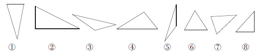
师：看看这些三角形，再看看你们自己剪的三角形，这么多三角形，有没有什么不同呢？
生：它们有的是直角，还有的是锐角。
师：他的意思就是这些三角形的什么不同？
生：它们的形状不同、大小不一致……
（教师根据学生的回答，板书：角）
师：既然这么多三角形有这么多不同之处，我们是不是可以考虑把它们分分类呢？站在数学的角度，可以按什么标准来分呢？
生：分成直角的、锐角的和钝角的。
师：他是想按什么来分类？
生：按角分。
师：就是按角的特征来分，在三角形中可能出现的有哪些角？
生：可能有锐角、直角、钝角。
师：这样理一理，我们的思路似乎越来越清晰了。比如①号三角形，它的三个角分别是什么角呢？
（教师根据学生的回答，将①号三角形角的特征填在下表中）
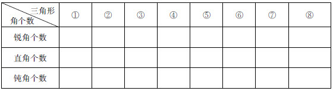
（每个小组观察其他三角形的情况，将结论填在上面的表中）
（交流反馈，统一意见：每个三角形各有几个锐角、几个直角或几个钝角？）
（对于有分歧的，让学生去比一比、量一量）
师：看看这个表格，再看看这些三角形，你发现了什么？
生：我发现这些三角形中有的锐角多，有的锐角少。
师：有的锐角多，多到什么程度？
生：有3个锐角。
师：有的锐角少，少到什么程度？
生：2个锐角。
生：我发现这些三角形中的锐角至少有2个。
师：听明白了吗？她这话是什么意思？
生：这些三角形中都有2个或2个以上锐角。
生：这些三角形中锐角个数最多。
生：直角和钝角少，最多就1个。
生：当三角形中有钝角或者直角时，锐角就只有2个了。
生：我发现③号和⑤号都是有1个钝角和2个锐角，①号、⑥号和⑦号都是有3个锐角，②号、④号和⑧号都是有2个锐角和1个直角。
师：刚才我们找每个三角形中每种角各有几个是为什么？
生：按角来分类。
师：看看这个表格和这些三角形，你有什么想法？
生：可以把这些三角形分成三类。
（全体学生认同后，教师根据学生的说法在表格纸上涂三种不同的颜色来表示）
师：再看看这个表格，你有什么疑惑吗？
生：怎么都有一些空格没填？
生：总共就3个角，锐角至少有2个呢，所以有些格子就空了。
（学生判断自己的三角形属于哪一类）
师：那么多三角形呢，难道就没有第四种情况了吗？有没有可能有2个直角1个锐角呢？
生：不可能。如果是两个直角，就是都往上升，就是四边形了。
师：（边说边演示）她这话是什么意思？怎么叫“都往上升”？
生：（共同想象）画一条线段表示三角形的一条边，如果有两个直角，另两条边的走向无法相交。
（学生想象是否还有其他情况）
（揭示三类三角形的名称并板书：锐角三角形直角三角形钝角三角形）
（学生回顾：什么是锐角三角形？直角三角形有什么特征？钝角三角形呢？）
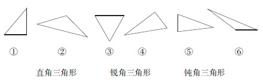
师：你认识这三个新朋友了吗？请给每个三角形找到适合它的名称。
（学生独立完成后，集体讨论）
生：①号我看它右下角的角是直角，它就是个直角三角形；②号我看它上方的角是钝角，它就是钝角三角形；③号我看它上面的两个角都是锐角，它就是锐角三角形；④号我看它上方的角是直角，它就是直角三角形；⑤号我看它左下角的角是个锐角，它就是锐角三角形；⑥号我看它左下角的角是钝角，它就是钝角三角形。
师：你们注意到没有，他在判断时与我们的方法有什么不同？
生：他只看了一个角。
师：他怎么只看一个角呢？就看一个角行不行？
（学生辨析后，都认可：所有三角形只要看最大的角是什么角，就能判断是什么三角形了）
师：如果加大难度，只给你看三角形中的一个角，你也能猜出它是什么三角形吗？
（教师逐个出示三角形的一部分）
师：直角，什么三角形？
生：（齐抢答）直角三角形。
师：钝角，什么三角形？
生：（齐抢答）钝角三角形。
师：锐角，什么三角形？
生：锐角三角形。
生：（忽然醒悟）不能确定。三种三角形都有可能。
师：为什么三种三角形都有可能？
生：下面藏着的两个角，有可能有一个直角，也有可能有一个钝角，也有可能都是锐角。
（学生想象三种三角形的形状后，教师演示验证）
师：为什么只知道一个角，有时能确定是什么三角形，有时却不能确定呢？
生：锐角是所有三角形都有的，直角是直角三角形才有的，钝角是钝角三角形才有的。所以，看到直角、钝角都能判断，但只看到锐角就不行了。
师：关于这三类三角形，你有什么新的认识？有什么好的建议？
（生发言略）
操作1：在平行四边形上画一条线，把它分成两个三角形。
（学生独立操作）
师：你分成了两个什么三角形？
生：我分成了两个锐角三角形。
生：我分成了两个钝角三角形。
（学生操作：同座两人一人把平行四边形分成两个锐角三角形，一人把平行四边形分成两个钝角三角形）
操作2：每人拿一个剪下的锐角三角形，把它折成两个直角三角形。
（学生操作，交流不同的折法，明确了沿着高折就能折成两个直角三角形）
操作3：每人再拿一个剪下的钝角三角形，画一条线段，把它分成一个直角三角形和一个钝角三角形。
（学生独立操作，尝试解决）